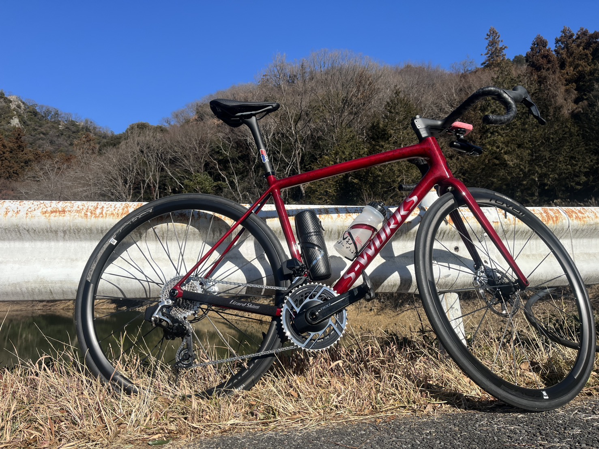
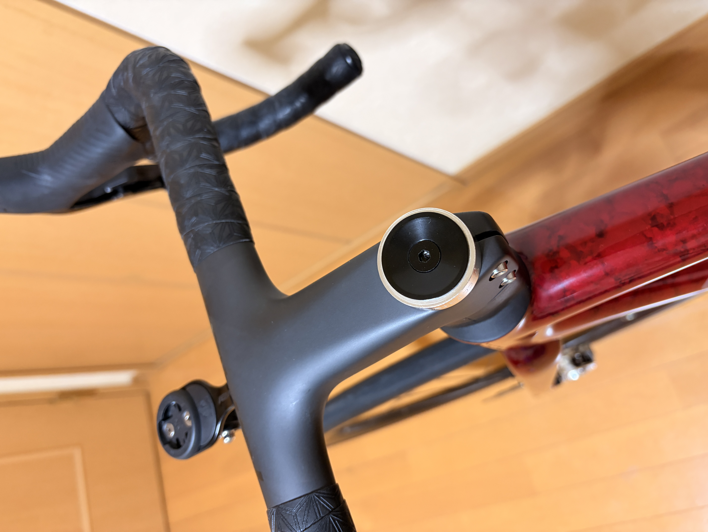
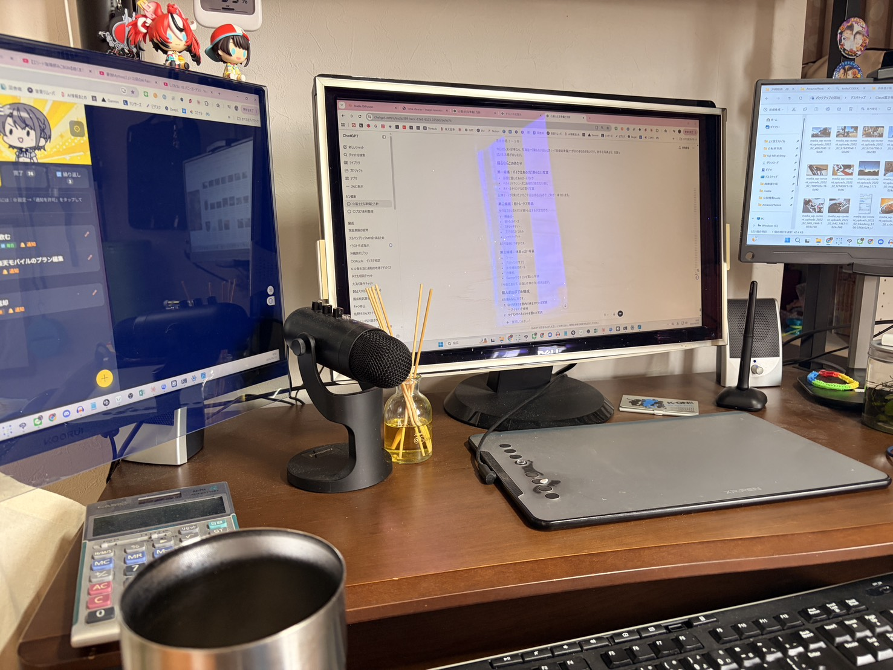
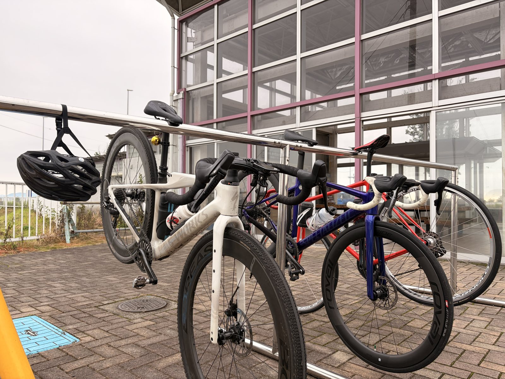

記事一覧
食事、ローラー、機材、AI相談、旧ブログ発掘を新着順に。写真、日付、タイトル、抜粋から気になる記事へ入れるようにします。

新着記事
写真、日付、タイトル、本文抜粋がそのまま読める一覧です。記事が増えてきたらここがブログの玄関になります。

Aethos2のステムキャップをWolfTooth MK0に交換。軽量化はなかったけどカッコいいからヨシ
軽量化を狙ってWolfTooth MK0に交換したら、元の黒キャップも2.4gと軽く、MK0は2.5g。ほぼ同重量だったけど、見た目が良いから満足という短めカスタム日誌です。
機材とアイテム / カスタム
ロードバイクで強くなるために、休む日を作った
昨日の友人ライドでTSS83.6。今日は乗りたい気持ちを抑えて、明日以降に踏むためのフルレスト寄りの日にしました。
コンディション / レスト / AI相談
友人と渡良瀬CRへ。回復走でもTSS83
回復走のつもりで友人と渡良瀬CRへ。32〜35km/h前後のトレインが楽しく、終わってみればTSS83.6の有酸素ライドでした。
外ライド / 渡良瀬CR / 友人ライド
マイプロからエクスプロージョンに変えた理由。最安より「考えずに買えるか」だった
マイプロの方が安い。それでもエクスプロージョンを選んだ理由を、g単価、セール価格、関税ラインの面倒さから整理しました。
食事と補給 / プロテイン / AI相談
15分260W×2の予定が、なぜか270W×2になったローラー練習
20分走の翌日に15分走×2。予定より踏めたが、TSS80.9で軽くはなく、最後は尻のケアまでAI相談になりました。
ローラー練習 / 15分走 / AI相談
20分285W。15分までは行けると思ったが、そこから地獄だった
GT-ROLLER Q1.1とRNC7で20分走。Garminはリカバリーと言ったが、本人の内臓はそう言っていません。
ローラー練習 / FTP確認 / AI相談
旧ブログを掘り返したら、219本の記事と523枚の画像が出てきた
Wayback Machineから旧ブログを発掘。過去の自分、今の自分、AIを同じ机につかせるための下準備です。
旧ブログ発掘 / AI相談
昔の富士ヒル追い込み論を、今の方針で読み直す
追い込みすぎない方針の根っこにある話。AIにもツッコませながら、昔の富士ヒル観を今の練習方針へつなぎ直します。
旧ブログ発掘 / 富士ヒル
Tarmac SL6を今読み直す。Aethos2で富士ヒルへ行く前に
2019年の実績と、今のAethos2をつなぐ機材リメイク。昔の機材感覚を今の目線で整理します。
旧ブログ発掘 / 機材
脚が重いので、ご飯300g実験を開始した
脚に力が入らない感覚を、糖質不足の仮説で見ていく食事実験です。
食事実験 / 補給 / AI相談記事の置き場
今後の記事が増えてきた時の分類です。最初から完璧に分けすぎず、読まれ方を見ながら調整します。